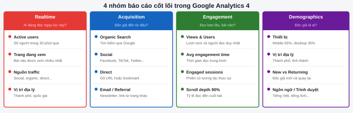
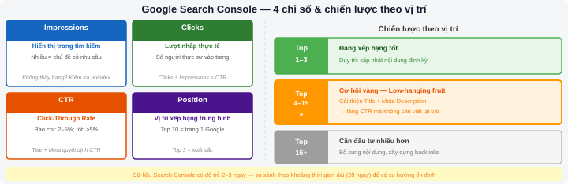
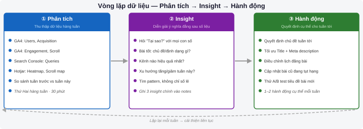

Đo lường & Phân tích Web
Sau chương này, sinh viên có thể:
- Cài đặt Google Analytics 4 lên trang web và xác minh dữ liệu đang được thu thập
- Đọc và diễn giải các báo cáo chính trong GA4: Acquisition, Engagement, Demographics
- Sử dụng Google Search Console để theo dõi hiệu suất tìm kiếm và phát hiện lỗi kỹ thuật
- Áp dụng dữ liệu heatmap từ Hotjar để cải thiện bố cục và trải nghiệm độc giả
- Xây dựng chiến lược nội dung dựa trên KPI và dữ liệu thực tế
11.1 Tại sao nhà báo cần biết phân tích dữ liệu?
Trong một thế kỷ, nghề báo vận hành theo logic một chiều: phóng viên viết, tòa soạn xuất bản, độc giả đọc. Phản hồi — nếu có — đến qua thư bạn đọc hoặc phản ứng xã hội, chậm chạp và không có hệ thống. Ngày nay, mọi lần nhấp chuột, mỗi giây đọc trang và từng lần chia sẻ đều để lại dấu vết số có thể đo được. Đây là cuộc cách mạng trong cách tòa soạn hiểu độc giả của mình.
Từ "viết xong là xong" đến "đo lường để cải thiện"
Tư duy truyền thống xem một bài báo là hoàn thành khi nó được xuất bản. Tư duy số hiện đại hiểu rằng xuất bản chỉ là nửa đầu hành trình. Nửa sau là theo dõi: bài có được đọc không? Độc giả đọc đến đoạn nào thì bỏ? Họ đến từ đâu? Họ có quay lại không?
Analytics không phải là công cụ để đo lường sự phổ biến nhằm chạy theo số lượt xem. Đúng hơn, nó là la bàn giúp nhà báo hiểu độc giả sâu hơn: họ quan tâm điều gì, tiêu thụ nội dung theo cách nào, và đâu là những rào cản khiến họ không đọc hết bài.
Theo Reuters Institute Digital News Report 2024, 73% tòa soạn báo hiện sử dụng dữ liệu analytics để quyết định chủ đề nội dung. Tại các tòa soạn lớn như The Guardian và New York Times, có cả bộ phận "audience analytics" chuyên phân tích dữ liệu để tư vấn cho biên tập viên.
Biên tập viên hiện đại sử dụng analytics như thế nào
Một ngày làm việc của biên tập viên kỹ thuật số bắt đầu bằng việc xem báo cáo ngắn: bài nào hôm qua đạt tốt, từ kênh nào, độc giả đọc được bao lâu. Thông tin này định hướng quyết định: đẩy bài lên mạng xã hội nào, lúc nào, với tiêu đề thay thế ra sao.
Theo chu kỳ tuần, analytics giúp nhận diện xu hướng: chủ đề nào được đọc nhiều trong 7 ngày qua, nhóm độc giả nào đang tăng trưởng, và bài nào tuy ít lượt xem nhưng có thời gian đọc rất dài (dấu hiệu của nội dung chất lượng cao được nhóm độc giả chuyên biệt yêu thích).
Analytics là công cụ hỗ trợ, không phải là người chủ. Một bài điều tra quan trọng có thể chỉ có 500 lượt đọc nhưng thay đổi chính sách — không trang analytics nào đo được điều đó. Dùng dữ liệu để hiểu độc giả, không phải để từ bỏ sứ mệnh báo chí.
11.2 Giới thiệu Google Analytics 4
Google Analytics 4 (GA4) là phiên bản mới nhất của nền tảng phân tích web miễn phí phổ biến nhất thế giới. Từ tháng 7 năm 2023, Google đã ngừng hỗ trợ Universal Analytics (UA) — phiên bản cũ — và GA4 trở thành tiêu chuẩn bắt buộc.
GA4 so với Universal Analytics
| Khía cạnh | Universal Analytics (cũ) | Google Analytics 4 (mới) |
|---|---|---|
| Đơn vị đo cơ bản | Phiên (Session) | Sự kiện (Event) |
| Theo dõi đa thiết bị | Hạn chế | Mạnh mẽ, theo dõi xuyên thiết bị |
| Tích hợp máy học (AI) | Không có | Có — dự đoán hành vi người dùng |
| Báo cáo tùy chỉnh | Có giới hạn | Linh hoạt hơn với Explore |
| Dữ liệu lịch sử | Lưu trữ lâu dài | Mặc định 14 tháng (có thể mở rộng) |
| Phù hợp với | Websites truyền thống | Websites + ứng dụng di động |
Các khái niệm cốt lõi trong GA4
Trước khi cài đặt, cần hiểu bốn khái niệm nền tảng mà GA4 xây dựng toàn bộ dữ liệu xung quanh:
| Khái niệm | Tiếng Anh | Định nghĩa thực tế |
|---|---|---|
| Sự kiện | Event | Bất kỳ hành động nào người dùng thực hiện: mở trang, nhấp link, xem video, cuộn trang. GA4 đo mọi thứ qua events. |
| Người dùng | Users | Số người truy cập duy nhất (theo cookie hoặc User ID). Phân biệt "New users" (lần đầu) và "Returning users" (đã từng ghé). |
| Phiên | Session | Một lượt truy cập liên tục. Nếu người dùng không hoạt động quá 30 phút rồi quay lại, đó là phiên mới. |
| Tương tác | Engagement | GA4 tính "engaged session" khi người dùng ở lại ít nhất 10 giây, xem ít nhất 2 trang, hoặc có conversion event. Chỉ số thay thế tốt hơn "bounce rate" cũ. |
Universal Analytics dùng "bounce rate" (tỷ lệ thoát) — người dùng vào xem 1 trang rồi ra. GA4 thay thế bằng "Engagement rate" — phần trăm phiên có tương tác thực sự. Đây là thay đổi quan trọng: một bài báo dài được đọc hết trong 5 phút sẽ không bị tính là "bounce" trong GA4 dù người dùng chỉ xem một trang.
Cài đặt GA4 lên WordPress
- Truy cập analytics.google.com và đăng nhập bằng tài khoản Google
- Nhấn Bắt đầu đo lường → đặt tên tài khoản (ví dụ: Tên tòa soạn) → tiếp tục
- Tạo Property (đơn vị): đặt tên, chọn múi giờ Việt Nam (UTC+7) và đơn vị tiền tệ VND
- Chọn Web làm nền tảng → nhập URL trang và tên luồng dữ liệu
- Google sẽ cấp một Measurement ID dạng
G-XXXXXXXXXX— lưu lại mã này - Trong WordPress: cài plugin Site Kit by Google (miễn phí, chính thức từ Google)
- Kích hoạt Site Kit → Kết nối dịch vụ → chọn Analytics → đăng nhập Google → cấp quyền
- Site Kit sẽ tự động chèn mã GA4 vào tất cả trang. Kiểm tra bằng cách vào GA4 → tab Realtime
Google Sites tích hợp trực tiếp với Google Analytics: vào phần Quản lý trang (biểu tượng bánh răng) → Phân tích → dán Measurement ID vào ô "Google Analytics ID" → lưu và xuất bản lại trang. Không cần plugin.
Xác minh cài đặt thành công
- Sau khi cài xong, mở trang web trong tab mới
- Quay lại GA4 → menu trái → Realtime
- Nếu thấy "1 người dùng trong 30 phút qua" — cài đặt thành công
- Nếu không thấy sau 5 phút: kiểm tra lại Measurement ID, đảm bảo không có trình chặn quảng cáo đang chạy
11.3 Các báo cáo quan trọng trong GA4
GA4 cung cấp hàng chục báo cáo, nhưng với nhà báo và biên tập viên, bốn nhóm báo cáo sau là nền tảng cần nắm vững.

Báo cáo Realtime — Ai đang đọc ngay lúc này?
Báo cáo Realtime hiển thị hoạt động trong 30 phút gần nhất theo thời gian thực. Đây là công cụ hữu ích khi bạn vừa đăng một bài nóng hoặc chia sẻ lên mạng xã hội và muốn theo dõi phản ứng tức thì.
Thông tin hữu ích trong Realtime: số người dùng đang hoạt động, bài họ đang xem, kênh đến (organic, social, direct), và vị trí địa lý. Nếu bài được chia sẻ trong nhóm lớn trên Facebook, bạn sẽ thấy spike traffic từ social ngay lập tức.
Báo cáo Acquisition — Độc giả đến từ đâu?
Đây là báo cáo chiến lược nhất. Nó cho thấy tỷ lệ độc giả đến từ mỗi kênh:
| Kênh | Ý nghĩa | Chiến lược tối ưu |
|---|---|---|
| Organic Search | Tìm thấy qua Google tìm kiếm | Đầu tư vào SEO, từ khóa, tiêu đề mạnh |
| Social | Từ Facebook, Twitter/X, TikTok... | Tối ưu thumbnail, caption, giờ đăng |
| Direct | Gõ thẳng URL, bookmark, app | Xây dựng lòng trung thành, newsletter |
| Referral | Từ link tại trang khác | Xây dựng quan hệ, bài guest post |
| Từ newsletter, email marketing | Tăng chất lượng danh sách subscriber | |
| Paid Search | Quảng cáo Google Ads | Theo dõi ROI, đo conversion |
Trong GA4: Reports → Acquisition → Traffic acquisition. Thay đổi phạm vi thời gian sang "Tháng trước". Xác định: kênh nào mang nhiều người dùng nhất? Kênh nào có thời gian tương tác dài nhất? Hai câu trả lời thường khác nhau — đó là thông tin quan trọng.
Báo cáo Engagement — Bài nào được đọc và đọc bao lâu?
Báo cáo Engagement → Pages and screens là nơi bạn thấy hiệu suất từng bài viết. Các chỉ số cần chú ý:
| Chỉ số | Ý nghĩa cho nhà báo |
|---|---|
| Views | Tổng lượt xem trang (kể cả lượt xem nhiều lần từ cùng một người) |
| Users | Số người dùng duy nhất đọc bài — chỉ số thực tế về tầm phủ |
| Average engagement time | Thời gian đọc trung bình. Bài chất lượng thường trên 2–3 phút |
| Engaged sessions | Số phiên có tương tác thực sự (không chỉ vào rồi ra ngay) |
| Scroll depth | Phần trăm người đọc cuộn xuống 90% trang (cần bật trong GA4) |
GA4 tự động theo dõi scroll khi người dùng cuộn đến 90% trang. Vào Admin → Events để xem sự kiện "scroll" có đang hoạt động không. Nếu một bài dài nhưng ít người đọc đến 90%, có thể bài quá dài hoặc phần cuối kém hấp dẫn.
Báo cáo Demographics — Độc giả là ai?
Báo cáo Demographics (Reports → User → User attributes) cho biết thông tin nhân khẩu học của độc giả: quốc gia, thành phố, ngôn ngữ, thiết bị sử dụng (máy tính hay điện thoại), hệ điều hành và trình duyệt.
Dữ liệu này cực kỳ có giá trị cho chiến lược nội dung: nếu 70% độc giả dùng điện thoại, bạn phải ưu tiên thiết kế mobile-first và định dạng bài ngắn, dễ đọc trên màn hình nhỏ. Nếu phần lớn đến từ Hà Nội, bạn có thể điều chỉnh góc độ bài viết cho phù hợp với độc giả miền Bắc.
GA4 không thu thập tên hay email cá nhân — dữ liệu demographics dựa trên mô hình thống kê tổng hợp. Tuy nhiên, bạn vẫn cần có chính sách bảo mật (Privacy Policy) rõ ràng trên trang, và cân nhắc tích hợp banner chấp thuận cookie (cookie consent) nếu trang phục vụ độc giả EU theo quy định GDPR.
11.4 Google Search Console
Nếu GA4 là kính hiển vi để nhìn vào hành vi người dùng trong trang web, thì Google Search Console (GSC) là kính thiên văn để nhìn vào cách trang web xuất hiện trên Google Search. Hai công cụ bổ trợ nhau và không thể thay thế nhau.
Kết nối Search Console với GA4
- Truy cập search.google.com/search-console → thêm property (nhập URL trang)
- Xác minh quyền sở hữu: cách dễ nhất là chọn HTML tag → copy thẻ meta → dán vào thẻ
<head>của trang (Site Kit làm tự động) - Trong GA4: Admin → Property Settings → Search Console Links → Link
- Chọn Search Console property → tiếp tục → lưu. Sau 24–48 giờ dữ liệu sẽ xuất hiện
Báo cáo Queries — Từ khóa nào đưa độc giả đến?
Đây là một trong những báo cáo giá trị nhất cho nhà báo. Performance → Search results cho thấy danh sách từ khóa (queries) mà trang xuất hiện trong kết quả tìm kiếm Google, kèm theo:
| Chỉ số | Ý nghĩa | Ngưỡng tham khảo |
|---|---|---|
| Impressions | Số lần bài xuất hiện trong kết quả tìm kiếm | — |
| Clicks | Số lần người dùng nhấp vào kết quả | — |
| CTR | Tỷ lệ click / số lần hiển thị | Báo chí thường 2–5%; trên 5% là tốt |
| Position | Vị trí trung bình trong kết quả (1 = đầu tiên) | Top 10 = trang 1; top 3 = rất tốt |

Lọc các từ khóa có Position từ 4–15 và Impressions cao. Đây là "low-hanging fruit" — trang đã xuất hiện nhưng chưa đủ nổi bật để được nhấp nhiều. Cải thiện tiêu đề và meta description của những trang này thường tăng CTR đáng kể mà không cần viết thêm nội dung.
Coverage — Lỗi index và trang bị loại trừ
Tab Indexing → Pages (trước đây là Coverage) cho thấy trạng thái của từng URL trong mắt Google:
- Indexed: trang đã được Google lập chỉ mục và có thể xuất hiện trong tìm kiếm.
- Not indexed: trang chưa được index — có thể do Google chưa crawl tới, hoặc có lỗi kỹ thuật.
- Excluded: trang bị loại trừ có chủ ý (ví dụ: có thẻ
noindex) hoặc do trùng lặp nội dung.
Với trang tin tức, điều quan trọng là đảm bảo tất cả bài viết quan trọng đều được indexed. Nếu thấy bài vừa đăng chưa xuất hiện trong Search Console, dùng tính năng URL Inspection để yêu cầu Google crawl lại ngay.
Core Web Vitals — Tốc độ và trải nghiệm người dùng
Từ năm 2021, Google chính thức dùng Core Web Vitals làm yếu tố xếp hạng. Ba chỉ số cốt lõi:
| Chỉ số | Đo gì? | Ngưỡng "Tốt" |
|---|---|---|
| LCP (Largest Contentful Paint) | Thời gian tải phần tử lớn nhất (thường là ảnh hero) | Dưới 2.5 giây |
| INP (Interaction to Next Paint) | Độ phản hồi khi người dùng tương tác (nhấp, gõ) | Dưới 200ms |
| CLS (Cumulative Layout Shift) | Độ dịch chuyển bố cục không mong muốn trong khi tải | Dưới 0.1 |
CLS cao thường xảy ra khi quảng cáo hoặc banner tải chậm, đẩy nội dung xuống ngay khi người dùng đang đọc. Đây là trải nghiệm rất tệ và bị Google phạt trong xếp hạng. Giải pháp: luôn đặt kích thước cố định cho không gian quảng cáo và ảnh ngay từ đầu trong HTML.
11.5 Heatmap với Hotjar
GA4 và Search Console cho bạn biết bao nhiêu người đọc và họ đến từ đâu. Hotjar cho bạn biết họ làm gì khi ở trên trang — click vào đâu, cuộn đến đâu, bỏ qua phần nào.
Heatmap là gì và cách đọc
Heatmap (bản đồ nhiệt) là hình ảnh trực quan hóa nơi người dùng tập trung chú ý trên trang. Màu đỏ/cam = nhiều tương tác; màu xanh/tím = ít tương tác. Hotjar cung cấp ba loại heatmap:
- Click map: hiển thị nơi người dùng nhấp chuột (hoặc chạm ngón tay trên mobile). Hữu ích để biết CTA nào được nhấp, link nào bị bỏ qua.
- Move map: theo dõi chuyển động con trỏ chuột — thường tương quan với nơi người dùng đang đọc.
- Scroll map: cho thấy phần trăm người dùng cuộn xuống đến từng mức độ của trang. Đường nằm ngang đột ngột ở 40% — bài có vấn đề ở đoạn giữa.
Scroll map lý tưởng của một bài báo dạng inverted pyramid (tháp ngược): 90–100% người đọc phần đầu, giảm dần xuống khoảng 50–60% ở phần cuối — đây là bình thường. Nếu có "vách đứng" (drop-off mạnh đột ngột) ở một điểm cụ thể, hãy xem lại nội dung hoặc định dạng ngay tại vị trí đó.
Session Recordings — Xem lại hành trình đọc
Tính năng Session Recordings ghi lại video màn hình ẩn danh của từng người dùng: họ cuộn trang như thế nào, nhấp vào đâu, dừng lại ở đoạn nào. Đây là cách hiểu người dùng sâu nhất có thể — như ngồi cạnh độc giả và xem họ đọc bài của bạn.
Tính năng này đặc biệt hữu ích khi có vấn đề bạn không hiểu qua số liệu: tại sao tỷ lệ chuyển đổi thấp dù traffic cao, tại sao người dùng thoát ngay ở trang chủ. Session recordings thường tiết lộ nguyên nhân một cách trực quan.
Cài đặt Hotjar miễn phí
- Đăng ký tài khoản tại hotjar.com — gói Basic (miễn phí) cho phép thu thập 35 session recordings/ngày
- Tạo Site mới: nhập URL trang web của bạn
- Hotjar cung cấp đoạn mã JavaScript tracking — copy toàn bộ đoạn code
- Trong WordPress: cài plugin Hotjar chính thức → dán Site ID (số trong mã Hotjar)
- Hoặc: dán code trực tiếp vào
<head>của theme (functions.php hoặc thông qua plugin "Insert Headers and Footers") - Kiểm tra: quay lại Hotjar → tab Verify installation → truy cập trang web để xác nhận
Cho mục đích học tập và trang web nhỏ: hoàn toàn đủ. Hotjar Free cho phép heatmap và session recordings với giới hạn hợp lý. Khi trang tăng traffic đáng kể (hàng chục nghìn phiên/tháng), mới cần cân nhắc nâng cấp lên gói trả phí.
11.6 Xây dựng chiến lược nội dung dựa trên dữ liệu
Đặt KPI cho trang tin tức
KPI (Key Performance Indicator — Chỉ số hiệu suất chính) là những con số cụ thể bạn cam kết đạt được. Không có KPI, analytics chỉ là những con số vô nghĩa. Dưới đây là bộ KPI gợi ý cho một trang tin tức/blog báo chí:
| Mục tiêu | KPI đề xuất | Công cụ đo | Chu kỳ theo dõi |
|---|---|---|---|
| Tăng lượng độc giả | Monthly Active Users (MAU) tăng 10%/tháng | GA4 → Users | Hàng tháng |
| Tăng chất lượng đọc | Average engagement time > 2 phút | GA4 → Engagement | Hàng tuần |
| Tăng traffic tìm kiếm | Organic search tăng 20% so với quý trước | GA4 + Search Console | Hàng tháng |
| Giảm tỷ lệ thoát | Engagement rate > 55% | GA4 → Engagement rate | Hàng tuần |
| Tăng độc giả quay lại | Returning users > 30% tổng users | GA4 → User attributes | Hàng tháng |
| Tăng newsletter subscribers | Thêm 50 subscribers mới/tháng | Mailchimp / Substack | Hàng tháng |

Quy trình: Phân tích → Insight → Hành động
Dữ liệu chỉ có giá trị khi dẫn đến hành động cụ thể. Quy trình ba bước sau là khung làm việc thực tế:
- Phân tích (Analyze): thu thập dữ liệu từ GA4 + Search Console + Hotjar mỗi tuần. Ghi lại những con số bất thường — tăng đột biến hoặc giảm đột ngột.
- Insight: đặt câu hỏi "Tại sao?" với mỗi con số bất thường. Bài về chủ đề X đột nhiên tăng 300% views — ai chia sẻ nó? Độc giả từ kênh nào đến nhiều hơn tuần trước? Insight không phải là con số, mà là diễn giải ý nghĩa đằng sau con số.
- Hành động (Act): đưa ra một quyết định cụ thể dựa trên insight. "Chủ đề môi trường đang được đọc nhiều hơn 40% so với tháng trước → lên kế hoạch 2 bài/tuần về chủ đề này trong tháng tới."
Hướng dẫn từng bước: Đọc báo cáo tuần và ra quyết định
Xây dựng thói quen đọc analytics đều đặn — đây là kỹ năng phân biệt nhà báo số chuyên nghiệp với người nghiệp dư.
- Mở GA4 → đặt phạm vi thời gian "7 ngày qua" vs "7 ngày trước đó" để so sánh
- Kiểm tra Users: tăng hay giảm so với tuần trước? Bao nhiêu phần trăm?
- Xem Acquisition: kênh nào tăng/giảm nhiều nhất? Tại sao?
- Mở Pages and screens: top 5 bài được đọc nhiều nhất tuần này. Điểm chung của chúng là gì (chủ đề, định dạng, tiêu đề)?
- Kiểm tra Search Console: từ khóa mới nào đang lên? Trang nào đang tụt hạng?
- Ghi lại 3 insight chính vào file ghi chú — không nhất thiết phải phức tạp, ví dụ: "Bài video đang có engagement time cao gấp đôi bài chỉ có text"
- Đề xuất 1–2 hành động cụ thể cho tuần tới dựa trên insights đó
Tạo một Google Sheets với các cột: Tuần, Users, Sessions, Avg engagement time, Top bài, Kênh lớn nhất, Insight chính, Hành động tiếp theo. Điền mỗi tuần. Sau 3 tháng, bạn sẽ có một bức tranh rõ ràng về xu hướng và những gì thực sự hiệu quả với độc giả của mình.
11.7 AI trong đo lường và phân tích web
Trí tuệ nhân tạo đang thay đổi cách tòa soạn khai thác dữ liệu analytics — không chỉ đơn giản hóa việc đọc báo cáo mà còn giúp dự báo xu hướng và cá nhân hóa nội dung theo từng nhóm độc giả.
GA4 Predictive Insights — Dự báo tích hợp sẵn
Google Analytics 4 tích hợp máy học ngay trong nền tảng với tính năng Predictive Audiences. GA4 có thể tự động nhận diện:
- Purchase probability: người dùng nào có khả năng chuyển đổi (mua báo, đăng ký newsletter) trong 7 ngày tới.
- Churn probability: độc giả nào có nguy cơ ngừng đọc trong 7 ngày tới — tín hiệu để chủ động giữ chân họ bằng nội dung phù hợp.
- Predicted revenue: ước tính doanh thu từ mỗi nhóm người dùng trong 28 ngày.
Đây là những dự báo tự động, không cần kỹ năng lập trình — chỉ cần đủ dữ liệu (thường cần ít nhất 1.000 người dùng/tuần để mô hình hoạt động chính xác).
Looker Studio + AI — Báo cáo tự động
Looker Studio (miễn phí, của Google) kết nối trực tiếp với GA4 và Search Console để tạo dashboard tùy chỉnh. Với tính năng AI mới nhất, Looker Studio có thể tự động nhận diện anomaly (bất thường) và tóm tắt xu hướng dưới dạng văn bản, giảm đáng kể thời gian đọc báo cáo thủ công.
Export dữ liệu GA4 dạng CSV, dán vào ChatGPT hoặc Claude kèm câu hỏi: "Dữ liệu này cho thấy xu hướng gì? Bài nào đang hoạt động tốt và vì sao?". AI có thể giúp bạn viết tóm tắt weekly analytics report trong vài phút. Lưu ý: chỉ chia sẻ dữ liệu đã ẩn danh, không chứa thông tin cá nhân người dùng.
AI và cá nhân hóa nội dung
Các tòa soạn lớn như The Guardian và Financial Times sử dụng AI để phân tích hành vi đọc và đề xuất nội dung phù hợp với từng người dùng. Đây là ứng dụng nâng cao, nhưng ngay cả tòa soạn nhỏ cũng có thể áp dụng phiên bản đơn giản:
- Dùng dữ liệu GA4 Demographics để hiểu nhóm độc giả chính, từ đó viết nội dung hướng đến nhóm đó.
- Sử dụng AI để phân tích top 10 bài được đọc lâu nhất và nhận diện pattern: độ dài, cấu trúc, chủ đề.
- Kết hợp Hotjar Session Recordings với AI summarizer để nhanh chóng phát hiện điểm thoát trang phổ biến.
AI có thể diễn giải dữ liệu nhanh nhưng dễ hallucinate (tạo ra "insight" không có thật) nếu dữ liệu không đủ hoặc câu hỏi không rõ ràng. Luôn kiểm chứng lại những phân tích AI đưa ra bằng cách đối chiếu trực tiếp với số liệu gốc trong GA4. AI hỗ trợ tốc độ, nhưng phán đoán báo chí vẫn là của con người.
Câu hỏi ôn tập
- Giải thích sự khác biệt giữa "Bounce rate" trong Universal Analytics và "Engagement rate" trong GA4. Tại sao GA4 đổi cách đo này lại có lợi hơn cho việc đánh giá chất lượng nội dung báo chí?
- Bạn có một bài viết với 10.000 impressions trên Search Console nhưng chỉ có 200 clicks (CTR = 2%). Hãy đề xuất ít nhất 3 cách cải thiện CTR cho bài này mà không cần viết lại toàn bộ bài.
- Tòa soạn của bạn nhận thấy 65% độc giả truy cập bằng điện thoại nhưng thời gian đọc trên mobile chỉ bằng một nửa so với desktop. Hãy phân tích các nguyên nhân có thể và đề xuất giải pháp.
- Thiết kế bộ KPI cho một trang blog báo chí cá nhân vừa ra mắt. Giải thích tại sao bạn chọn những chỉ số đó, và chúng sẽ thay đổi như thế nào sau 6 tháng hoạt động?
- Một tòa soạn muốn dùng AI để phân tích dữ liệu GA4 hàng tuần và tạo báo cáo tóm tắt tự động. Hãy thiết kế quy trình cụ thể: dữ liệu nào cần export, câu hỏi nào đặt cho AI, và kiểm chứng kết quả AI ra sao để đảm bảo độ chính xác?
- Phân tích trường hợp: một trang tin có Organic Search chiếm 15% traffic (thấp), Direct chiếm 60% (cao bất thường), và Average engagement time là 4 phút 30 giây (rất cao). Hãy diễn giải ý nghĩa của từng chỉ số, đặt giả thuyết về đặc điểm của trang này, và đề xuất 2 chiến lược phát triển phù hợp.